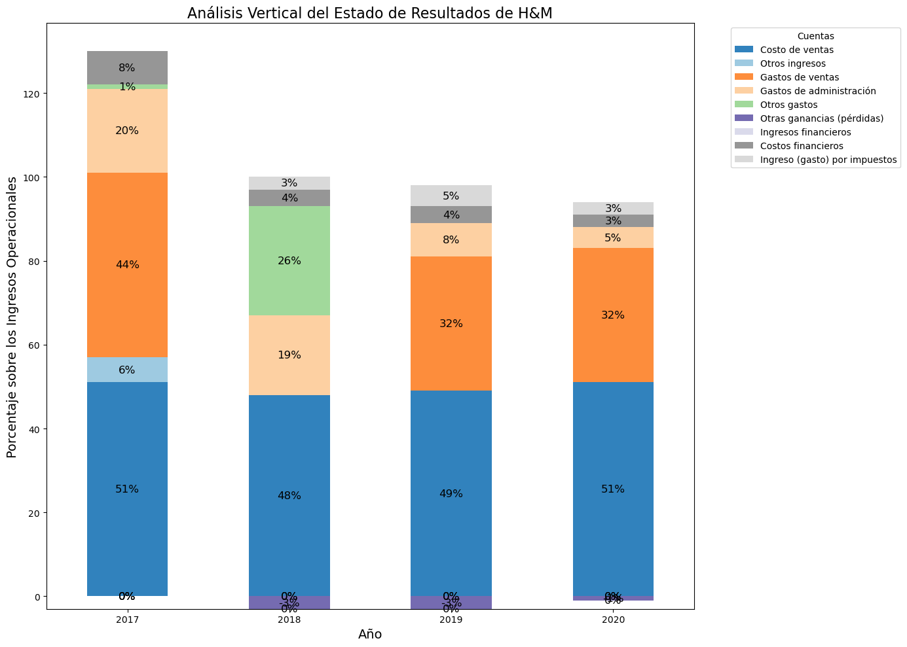

Análisis Vertical¶
Análisis Vertical Balance General:¶
El código crea un gráfico de barras horizontal para las principales cuentas del Balance General, omitiendo aquellas con menores proporciones. Facilita el análisis de cuentas negativas, como las Ganancias acumuladas.
El siguiente ejemplo se realizó con el archivo
AnalisisVertical-BG.csv
import pandas as pd
import numpy as np
import matplotlib.pyplot as plt
# Paso 1: Leer el archivo CSV
# Se utiliza 'sep=None' y 'engine=python' para detectar automáticamente el delimitador.
csv_file_path = "AnalisisVertical-BG.csv"
data = pd.read_csv(csv_file_path, sep=None, engine="python")
# Paso 2: Preprocesamiento de los datos
# Convertir cadenas de porcentaje a flotantes y manejar caracteres invisibles en la columna de etiquetas
for col in data.columns[1:]:
data[col] = data[col].str.replace("%", "").astype(float)
# Renombrar la primera columna a 'Etiquetas' si contiene un carácter invisible
data.columns = ["Etiquetas" if "" in col else col for col in data.columns]
# Paso 3: Invertir el orden del DataFrame para la visualización
# Utilizamos [::-1] para invertir el DataFrame, de manera que la primera entrada esté en la parte superior del gráfico de barras.
data_inverted = data.iloc[::-1]
# Paso 4: Crear un gráfico de barras
# Establecer el tamaño de la figura y el ancho de las barras
fig, ax = plt.subplots(figsize=(14, 10))
bar_width = 0.15
# Usar el mapa de colores tab20 para las barras
tab20_colors = plt.cm.tab20.colors
# Determinar el número de barras por grupo (número de años en este caso)
n_bars = len(data.columns) - 1
# Crear las posiciones del eje y para las barras usando numpy
indices_inverted_csv = np.arange(len(data_inverted))
# Graficar las barras para cada año utilizando un bucle
for i, year in enumerate(data_inverted.columns[1:]):
bar_positions = indices_inverted_csv - (n_bars / 2 - i) * bar_width
ax.barh(
bar_positions,
data_inverted[year],
height=bar_width,
color=tab20_colors[i],
edgecolor="black",
label=year,
)
# Paso 5: Etiquetar el gráfico
# Establecer las etiquetas del eje y usando la columna 'Etiquetas' del DataFrame invertido
ax.set_yticks(indices_inverted_csv)
ax.set_yticklabels(data_inverted["Etiquetas"])
# Especificar qué etiquetas poner en negrita creando un mapeo basado en las cuentas proporcionadas
cuentas_en_negrita = [
"Activos corrientes totales",
"Total de activos no corrientes",
"Total de activos",
"Pasivos corrientes totales",
"Total de pasivos no corrientes",
"Total pasivos",
"Patrimonio total",
]
mapeo_negritas = {
etiqueta: etiqueta in cuentas_en_negrita for etiqueta in data["Etiquetas"]
}
# Aplicar el estilo negrita condicionalmente basado en el mapeo
for etiqueta in ax.get_yticklabels():
if mapeo_negritas[etiqueta.get_text()]:
etiqueta.set_weight("bold")
# Añadir una leyenda, etiqueta del eje x y un título al gráfico
ax.legend(title="Año", loc="upper right")
ax.set_xlabel("Porcentaje (%)")
ax.set_title("Análisis Vertical del Balance General de H&M")
# Paso 6: Ajustar el diseño y mostrar la gráfica
plt.tight_layout()
plt.show()

Este gráfico ofrece una alternativa para el análisis vertical del Balance General, situando las cuentas negativas en la parte inferior. Se aconseja excluir cuentas totales como Activos corrientes totales, Activos no corrientes totales, entre otros.
El siguiente ejemplo se realizó con el archivo
AnalisisVertical-BG-2.csv
# Importar las bibliotecas necesarias
import matplotlib.pyplot as plt
import pandas as pd
# Ruta del archivo CSV
csv_file_path = "AnalisisVertical-BG-2.csv"
# Cargar los datos, usando 'sep=None' y 'engine="python"' para manejar automáticamente el delimitador
data_csv = pd.read_csv(csv_file_path, sep=None, engine="python")
# Limpiar los datos, eliminando el símbolo de porcentaje y convirtiendo los valores a formato numérico
data_csv_clean = data_csv.copy()
for col in data_csv.columns[1:]: # Excluye la primera columna de etiquetas
data_csv_clean[col] = data_csv[col].str.replace("%", "").astype(float) / 100
# Convertir la primera columna en el índice del DataFrame
pivot_data_csv = data_csv_clean.set_index(
""
).T # Asume que el nombre de la primera columna es ''
# Configurar el tamaño y el título del gráfico
fig, ax = plt.subplots(figsize=(12, 8))
plt.title("Análisis Vertical del Balance General de H&M", fontsize=16)
# Generar el gráfico de barras apiladas
pivot_data_csv.plot(kind="bar", stacked=True, ax=ax, colormap=plt.cm.tab20)
# Configurar las etiquetas de los ejes y rotar las etiquetas del eje X para mejorar la legibilidad
plt.xlabel("Año", fontsize=14)
plt.ylabel("Proporción", fontsize=14)
plt.xticks(rotation=0)
# Mover la leyenda fuera del gráfico para mejorar la claridad
plt.legend(title="Cuentas", bbox_to_anchor=(1.05, 1), loc="upper left")
# Ajustar el layout
plt.tight_layout()
# Mostrar el gráfico
plt.show()

Análisis Vertical Estado de Resultados:¶
Para este gráfico, se debe excluir la cuenta base de Ingresos Operacionales y también omitir cuentas relacionadas con Utilidades o Ganancias, como Utilidad Bruta y Utilidad Operacional, entre otras.
El siguiente ejemplo se realizó con el archivo
AnalisisVertical-ER.csv
# Importar las bibliotecas necesarias
import matplotlib.pyplot as plt
import pandas as pd
# Ruta del archivo CSV con los datos del Estado de Resultados
er_file_path = "AnalisisVertical-ER.csv"
# Cargar los datos desde el archivo CSV
# Se utiliza 'sep=None' y 'engine="python"' para manejar automáticamente el delimitador
data_er = pd.read_csv(er_file_path, sep=None, engine="python")
# Limpiar los datos, eliminando el símbolo de porcentaje y convirtiendo los valores a formato numérico
data_er_clean = data_er.copy()
for col in data_er.columns[1:]: # Excluye la primera columna de etiquetas
data_er_clean[col] = data_er[col].str.replace("%", "").astype(float)
# Convertir la primera columna en el índice del DataFrame para facilitar la visualización
pivot_data_er = data_er_clean.set_index("").T # '' es el nombre de la primera columna
# Configurar el tamaño y el título del gráfico
fig, ax = plt.subplots(figsize=(14, 10))
plt.title("Análisis Vertical del Estado de Resultados de H&M", fontsize=16)
# Generar el gráfico de barras apiladas
# 'kind='bar'' indica que queremos un gráfico de barras
# 'stacked=True' para apilar las barras, mostrando la contribución de cada categoría al total
# 'ax=ax' para dibujar el gráfico en el subplot creado anteriormente
# 'colormap=plt.cm.tab20c' para usar la paleta de colores especificada
pivot_data_er.plot(kind="bar", stacked=True, ax=ax, colormap=plt.cm.tab20c)
# Configurar las etiquetas de los ejes y rotar las etiquetas del eje X para mejorar la legibilidad
plt.xlabel("Año", fontsize=14)
plt.ylabel("Porcentaje sobre los Ingresos Operacionales", fontsize=14)
plt.xticks(rotation=0)
# Mover la leyenda fuera del gráfico para evitar que bloquee la visualización
plt.legend(title="Cuentas", bbox_to_anchor=(1.05, 1), loc="upper left")
# Añadiendo etiquetas de porcentaje en cada segmento de las barras apiladas
# 'label_type='center'' coloca las etiquetas en el centro de cada segmento
# 'fontsize=12' y 'color='black'' configuran el tamaño y color del texto de las etiquetas
for bars in ax.containers:
ax.bar_label(bars, label_type="center", fontsize=12, color="black", fmt="%.0f%%")
# Ajustar el layout para asegurar que todo el contenido se muestre adecuadamente
plt.tight_layout()
# Mostrar el gráfico
plt.show()
